library(fisheriescape)
library(gslSpatial)
library(terra)
library(ggplot2)
library(tidyterra)
library(dplyr)Load example files and a 10 x 10 km2 hexagonal grid
df<-crab
fa.poly<-terra::vect(system.file("extdata/sample.fa.poly.shp", package="fisheriescape"))
grid<-gslSpatial::get_shapefile('hex')
#> 10 x 10 km hex grid
grid<-terra::crop(grid,ext(fa.poly)*1.05)Site score
df.ss<-distinct_at(df,vars('event.id'),.keep_all = T)
df.ss<-df.ss[-which(is.na(df.ss$x)|is.na(df.ss$y)),]
ggplot()+
geom_spatvector(data=fa.poly,fill='white')+
geom_spatvector(data=grid,fill=NA)+
geom_point(data=df.ss,aes(x,y))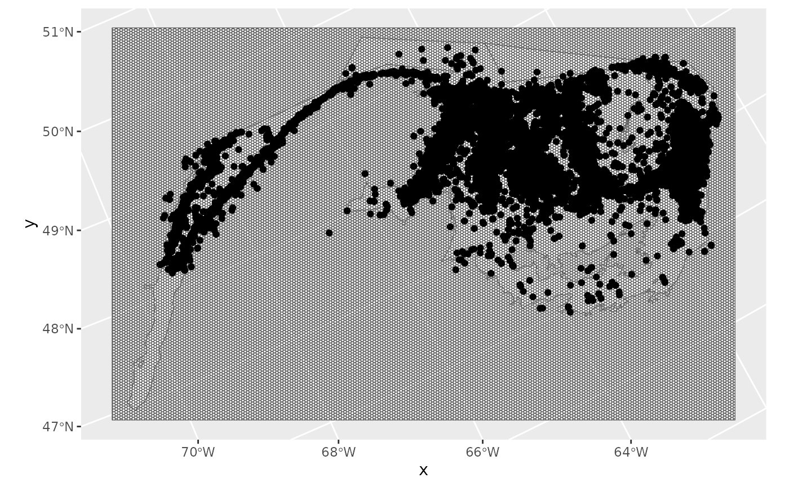
ss<-suppressMessages(fs_site_score(df.ss,fa.poly,grid=grid))# be patient
#> Processing points 1 to 1000. 14:49:48
#> Processing points 1001 to 2000. 14:49:48
#> Processing points 2001 to 3000. 14:49:49
#> Processing points 3001 to 4000. 14:49:49
#> Processing points 4001 to 5000. 14:49:49
#> Processing points 5001 to 6000. 14:49:49
#> Processing points 6001 to 7000. 14:49:49
#> Processing points 7001 to 8000. 14:49:49
#> Processing points 8001 to 9000. 14:49:49
#> Processing points 9001 to 10000. 14:49:49
#> Processing points 10001 to 11000. 14:49:49
#> Processing points 11001 to 12000. 14:49:49
#> Processing points 12001 to 13000. 14:49:49
#> Processing points 13001 to 14000. 14:49:49
#> Processing points 14001 to 15000. 14:49:49
#> Processing points 15001 to 16000. 14:49:49
#> Processing points 16001 to 17000. 14:49:49
#> Processing points 17001 to 18000. 14:49:49
#> Processing points 18001 to 19000. 14:49:49
#> Processing points 19001 to 20000. 14:49:49
#> Processing points 20001 to 21000. 14:49:49
#> Processing points 21001 to 22000. 14:49:49
#> Processing points 22001 to 23000. 14:49:49
#> Processing points 23001 to 24000. 14:49:49
#> Processing points 24001 to 25000. 14:49:49
#> Processing points 25001 to 26000. 14:49:50
#> Processing points 26001 to 27000. 14:49:50
#> Processing points 27001 to 28000. 14:49:50
#> Processing points 28001 to 29000. 14:49:50
#> Processing points 29001 to 30000. 14:49:50
#> Processing points 30001 to 31000. 14:49:50
#> Processing points 31001 to 32000. 14:49:50
#> Processing points 32001 to 33000. 14:49:50
#> Processing points 33001 to 34000. 14:49:50
#> Processing points 34001 to 35000. 14:49:50
#> Processing points 35001 to 36000. 14:49:50
#> Processing points 36001 to 37000. 14:49:50
#> Processing points 37001 to 38000. 14:49:50
#> Processing points 38001 to 39000. 14:49:50
#> Processing points 39001 to 39292. 14:49:50
head(ss)
#> # A tibble: 6 × 7
#> # Groups: fleet, sw [5]
#> GRID_ID sw tot.count.hex av.count.hex fleet sum.av.count.fleet
#> <chr> <chr> <int> <dbl> <chr> <dbl>
#> 1 ATW-1161 19 1 0.2 NA NA
#> 2 ATW-1161 20 2 0.4 NA NA
#> 3 ATW-1161 21 2 0.4 NA NA
#> 4 ATX-1161 21 1 0.2 NA NA
#> 5 ATY-1137 15 1 0.2 NA NA
#> 6 ATY-1143 13 1 0.2 NA NA
#> # ℹ 1 more variable: prop.count.fleet <dbl>
summary(ss)
#> GRID_ID sw tot.count.hex av.count.hex
#> Length:16202 Length:16202 Min. : 1.000 Min. : 0.200
#> Class :character Class :character 1st Qu.: 1.000 1st Qu.: 0.200
#> Mode :character Mode :character Median : 2.000 Median : 0.400
#> Mean : 2.425 Mean : 0.485
#> 3rd Qu.: 3.000 3rd Qu.: 0.600
#> Max. :58.000 Max. :11.600
#>
#> fleet sum.av.count.fleet prop.count.fleet
#> Length:16202 Min. : 0.2 Min. :0.000301
#> Class :character 1st Qu.:141.0 1st Qu.:0.000602
#> Mode :character Median :454.0 Median :0.001171
#> Mean :374.7 Mean :0.005595
#> 3rd Qu.:512.6 3rd Qu.:0.002736
#> Max. :664.6 Max. :1.000000
#> NA's :117 NA's :117
index<-which(grid$GRID_ID%in%unlist(ss[which(is.na(ss$sum.av.count.fleet)),'GRID_ID']))
ggplot()+
geom_spatvector(data=fa.poly,fill='white')+
geom_spatvector(data=grid,fill=NA)+
geom_spatvector(data=grid[index,],fill='red')#+geom_point(data=df.ss,aes(x,y))
Pivot tables
Select distinct rows
df2<-distinct_at(df,vars('event.id','fleet','cfv','dateland','ctchdate',
'gear.amount',
'hours.fished'),.keep_all = T)
df2<-droplevels(df2)
names(df2)
#> [1] "event.id" "trip.id" "cfv" "dateland" "ctchdate"
#> [6] "latitude" "longitude" "year" "sw" "x"
#> [11] "y" "fleet" "gear.amount" "hours.fished"
nrow(df2)
#> [1] 41154Pivot 1
Function fs_pivot1 summarizes data by variables trip.id
and fleet. The resulting table contains the summed gear, maximum hours
(if applicable), and mean days (if applicable).
pivot1<-fs_pivot1(df2,
keep.cols = c('cfv','year','sw'),
gear.col='gear.amount',
hour.col='hours.fished')
pivot1
#> # A tibble: 32,302 × 7
#> # Groups: trip.id, fleet [32,302]
#> trip.id fleet cfv[,1] year sw sum.gear max.hours
#> <chr> <chr> <chr> <dbl> <chr> <dbl> <dbl>
#> 1 k6!ffg;2016-05-07;2016-05-07 GQ_CF… k6!ffg 2016 18 NA 24
#> 2 k6!ffg;2016-05-15;2016-05-15 GQ_CF… k6!ffg 2016 19 NA 24
#> 3 k6!ffg;2016-05-23;2016-05-23 GQ_CF… k6!ffg 2016 21 NA 24
#> 4 k6!ffg;2016-05-28;2016-05-28 GQ_CF… k6!ffg 2016 21 NA 24
#> 5 k6!8JJgk6;2016-05-14;2016-05-14 GQ_CF… k6!8JJ… 2016 19 NA 24
#> 6 k6!8JJgk6;2016-05-27;2016-05-27 GQ_CF… k6!8JJ… 2016 21 NA 24
#> 7 k6!8JJgk6;2016-06-05;2016-06-05 GQ_CF… k6!8JJ… 2016 22 NA 24
#> 8 k6gg7!2$;2014-05-31;2014-05-30 GQ_CF… k6gg7!… 2014 22 45 24
#> 9 k6ggJJ!7;2017-05-19;2017-05-19 GQ_CF… k6ggJJ… 2017 20 25 24
#> 10 k6ggJJ!7;2017-05-25;2017-05-25 GQ_CF… k6ggJJ… 2017 21 30 24
#> # ℹ 32,292 more rows
summary(pivot1)
#> trip.id fleet cfv.V1 year
#> Length:32302 Length:32302 Length:32302 Min. :2013
#> Class :character Class :character Class :character 1st Qu.:2014
#> Mode :character Mode :character Mode :character Median :2015
#> Mean :2015
#> 3rd Qu.:2017
#> Max. :2017
#>
#> sw sum.gear max.hours
#> Length:32302 Min. : 1.0 Min. :24
#> Class :character 1st Qu.: 35.0 1st Qu.:24
#> Mode :character Median : 71.0 Median :24
#> Mean : 73.1 Mean :24
#> 3rd Qu.:100.0 3rd Qu.:24
#> Max. :438.0 Max. :24
#> NA's :349Now fill in the missing gear.amount with group averages.The user needs to choose the order of variables to group by that is most appropriate for the fishery of interest. By the end of this step, there should be no missing gear.amount.
if(length(which(is.na(pivot1$sum.gear)))>0){
pivot1<-fisheriescape::fs_fill_col(pivot1,group.cols=c('cfv','year','sw'),update.col = 'sum.gear',fun=mean)}
if(length(which(is.na(pivot1$sum.gear)))>0){
pivot1<-fisheriescape::fs_fill_col(pivot1,group.cols=c('cfv','year'),update.col = 'sum.gear',fun=mean)}
if(length(which(is.na(pivot1$sum.gear)))>0){
pivot1<-fisheriescape::fs_fill_col(pivot1,group.cols=c('cfv'),update.col = 'sum.gear',fun=mean)}
if(length(which(is.na(pivot1$sum.gear)))>0){
pivot1<-fisheriescape::fs_fill_col(pivot1,group.cols=c('year','sw'),update.col = 'sum.gear',fun=mean)}
if(length(which(is.na(pivot1$sum.gear)))>0){
pivot1<-fisheriescape::fs_fill_col(pivot1,group.cols=c('year'),update.col = 'sum.gear',fun=mean)}
if(length(which(is.na(pivot1$sum.gear)))>0){
print('There are still NAs after filling gear according to current steps.')}There are no longer NAs in gear.amount. If object pivot1 contained NAs in hours.fished, we would repeat the above step for hours.fished. However, we can see that there are no NAs in hours.fished.
summary(pivot1)
#> trip.id fleet cfv.V1 year
#> Length:32302 Length:32302 Length:32302 Min. :2013
#> Class :character Class :character Class :character 1st Qu.:2014
#> Mode :character Mode :character Mode :character Median :2015
#> Mean :2015
#> 3rd Qu.:2017
#> Max. :2017
#> sw sum.gear max.hours
#> Length:32302 Min. : 1.00 Min. :24
#> Class :character 1st Qu.: 35.00 1st Qu.:24
#> Mode :character Median : 71.00 Median :24
#> Mean : 73.03 Mean :24
#> 3rd Qu.:100.00 3rd Qu.:24
#> Max. :438.00 Max. :24Pivot 2
Function fs_pivot2 summarizes data by user-specified
groups, which must include year, standard week (sw), and either cfv or
licence, and which should typically also include fleet.
When trap.fishery==‘yes’, the resulting table contains the maximum gear, maximum hours (if applicable), and mean days (if applicable).
When trap.fishery!=‘yes’, the resulting table contains the mean gear, mean hours (if applicable), and mean days (if applicable).
pivot2<-fs_pivot2(pivot1,
trap.fishery='yes',
group.cols=c('cfv','fleet','year','sw'))
head(as.data.frame(pivot2))
#> cfv fleet year sw gear hours
#> 1 !2$82$ GQ_CFA_19 2013 29 8 24
#> 2 !2$82$ GQ_CFA_19 2013 30 8 24
#> 3 !2$82$ GQ_CFA_19 2014 29 8 24
#> 4 !2$82$ GQ_CFA_19 2014 30 8 24
#> 5 !2$82$ GQ_CFA_19 2014 31 8 24
#> 6 !2$82$ GQ_CFA_19 2015 29 8 24
summary(pivot2)
#> cfv.V1 fleet year sw
#> Length:14408 Length:14408 Min. :2013 Length:14408
#> Class :character Class :character 1st Qu.:2014 Class :character
#> Mode :character Mode :character Median :2015 Mode :character
#> Mean :2015
#> 3rd Qu.:2017
#> Max. :2017
#> gear hours
#> Min. : 1.00 Min. :24
#> 1st Qu.: 50.00 1st Qu.:24
#> Median : 75.00 Median :24
#> Mean : 86.12 Mean :24
#> 3rd Qu.:123.25 3rd Qu.:24
#> Max. :438.00 Max. :24Pivot 3
Function fs_pivot3 summarizes data by user-specified
groups, which must include year and standard week (sw), and which should
typically also include fleet. Grouping should not include either
cfv or licence. A parameter, “id.col”, needs to be specified as
either cfv or licence.
When trap.fishery==‘yes’, the resulting table contains the number of distinct cfvs or licences (“n.vessels”), summed gear (“total.gear”), maximum hours (“soak.time”, if applicable), and mean days (“days”, if applicable).
When trap.fishery!=‘yes’, the resulting table contains the number of distinct cfvs or licences (“n.vessels”), summed gear (“total.gear”), mean hours (“soak.time”, if applicable), and mean days (“days”, if applicable).
pivot3<-fs_pivot3(pivot2,
group.cols=c('fleet','year','sw'),
id.col='cfv',
trap.fishery='yes')
head(as.data.frame(pivot3))
#> fleet year sw n.vessels total.gear soak.time
#> 1 GQ_CFA_12 2013 17 5 289 24
#> 2 GQ_CFA_12 2013 18 251 24551 24
#> 3 GQ_CFA_12 2013 19 240 22352 24
#> 4 GQ_CFA_12 2013 20 243 22422 24
#> 5 GQ_CFA_12 2013 21 244 24111 24
#> 6 GQ_CFA_12 2013 22 238 23771 24
summary(pivot3)
#> fleet year sw n.vessels
#> Length:288 Min. :2013 Length:288 Min. : 1.00
#> Class :character 1st Qu.:2014 Class :character 1st Qu.: 5.00
#> Mode :character Median :2015 Mode :character Median : 15.00
#> Mean :2015 Mean : 50.03
#> 3rd Qu.:2016 3rd Qu.: 35.00
#> Max. :2017 Max. :312.00
#> total.gear soak.time
#> Min. : 1 Min. :24
#> 1st Qu.: 266 1st Qu.:24
#> Median : 989 Median :24
#> Mean : 4308 Mean :24
#> 3rd Qu.: 2690 3rd Qu.:24
#> Max. :31734 Max. :24Seasons and Pivot 4
The function fs_pivot4 is a little different from the
previous pivot functions, as it performs a number of steps. It does not
yet have a lot of flexibility, and needs to be used with caution. Don’t
use this function for fisheries that need information to be summarized
by province in addition to by fleet.
need to describe what function does, and resulting output
pivot4<-fs_pivot4(df=df2,
trap.fishery='yes',
pivot3, #output from fs_pivot3
fleet.col='fleet', #should match between df and pivot3
prov.col=NULL,
area.note.col=NULL)
head(as.data.frame(pivot4))
#> fleet year sw n.vessels total.gear soak.time prop.week.fished
#> 1 GQ_CFA_12 2013 17 5 289 24 0.2857143
#> 2 GQ_CFA_12 2013 18 251 24551 24 1.0000000
#> 3 GQ_CFA_12 2013 19 240 22352 24 1.0000000
#> 4 GQ_CFA_12 2013 20 243 22422 24 1.0000000
#> 5 GQ_CFA_12 2013 21 244 24111 24 1.0000000
#> 6 GQ_CFA_12 2013 22 238 23771 24 1.0000000
summary(pivot4)
#> fleet year sw n.vessels
#> Length:288 Min. :2013 Length:288 Min. : 1.00
#> Class :character 1st Qu.:2014 Class :character 1st Qu.: 5.00
#> Mode :character Median :2015 Mode :character Median : 15.00
#> Mean :2015 Mean : 50.03
#> 3rd Qu.:2016 3rd Qu.: 35.00
#> Max. :2017 Max. :312.00
#> total.gear soak.time prop.week.fished
#> Min. : 1 Min. :24 Min. :0.1429
#> 1st Qu.: 266 1st Qu.:24 1st Qu.:1.0000
#> Median : 989 Median :24 Median :1.0000
#> Mean : 4308 Mean :24 Mean :0.9201
#> 3rd Qu.: 2690 3rd Qu.:24 3rd Qu.:1.0000
#> Max. :31734 Max. :24 Max. :1.0000Common effort usage (CEU)
For most fisheries, use function fs_calc_ceu and follow
the prompts. This function cannot yet be applied to American lobster,
NAFO 4T.
need to describe what function does for each fishery, and resulting output
ceu<-fs_calc_ceu(pivot4)To simplify things for this vignette, we will use a pre-made CEU file.
ceu<-ceu
head(ceu)
#> # A tibble: 6 × 3
#> # Groups: fleet [1]
#> fleet sw av.ceu
#> <chr> <chr> <dbl>
#> 1 GQ_CFA_12 14 5.6
#> 2 GQ_CFA_12 15 14.4
#> 3 GQ_CFA_12 16 3115.
#> 4 GQ_CFA_12 17 9688.
#> 5 GQ_CFA_12 18 15934.
#> 6 GQ_CFA_12 19 19271.Fisheriescape
Join site score with CEU and calculate fisheriescape
df<-left_join(ss,ceu)
df$fs<-df$site.score*df$av.ceu
head(df)
#> # A tibble: 6 × 10
#> # Groups: fleet, sw [4]
#> GRID_ID sw tot.count.hex av.count.hex fleet sum.av.count.fleet
#> <chr> <chr> <int> <dbl> <chr> <dbl>
#> 1 ATY-1159 19 1 0.2 GQ_CFA_17 100
#> 2 ATY-1159 20 2 0.4 GQ_CFA_17 88.4
#> 3 ATY-1159 21 2 0.4 GQ_CFA_17 70.4
#> 4 ATY-1160 18 1 0.2 GQ_CFA_17 108.
#> 5 ATY-1160 20 2 0.4 GQ_CFA_17 88.4
#> 6 ATY-1160 21 2 0.4 GQ_CFA_17 70.4
#> # ℹ 4 more variables: prop.count.fleet <dbl>, site.score <dbl>, av.ceu <dbl>,
#> # fs <dbl>
summary(df) # a small number of missing fs or av.ceu are expected
#> GRID_ID sw tot.count.hex av.count.hex
#> Length:16085 Length:16085 Min. : 1.000 Min. : 0.2000
#> Class :character Class :character 1st Qu.: 1.000 1st Qu.: 0.2000
#> Mode :character Mode :character Median : 2.000 Median : 0.4000
#> Mean : 2.435 Mean : 0.4869
#> 3rd Qu.: 3.000 3rd Qu.: 0.6000
#> Max. :58.000 Max. :11.6000
#>
#> fleet sum.av.count.fleet prop.count.fleet site.score
#> Length:16085 Min. : 0.2 Min. :0.0003009 Min. :0.0003009
#> Class :character 1st Qu.:141.0 1st Qu.:0.0006019 1st Qu.:0.0006019
#> Mode :character Median :454.0 Median :0.0011705 Median :0.0011705
#> Mean :374.7 Mean :0.0055953 Mean :0.0055953
#> 3rd Qu.:512.6 3rd Qu.:0.0027364 3rd Qu.:0.0027364
#> Max. :664.6 Max. :1.0000000 Max. :1.0000000
#>
#> av.ceu fs
#> Min. :1.143e-01 Min. : 0.1143
#> 1st Qu.:2.938e+03 1st Qu.: 7.5413
#> Median :1.593e+04 Median : 9.1276
#> Mean :1.405e+04 Mean : 15.3383
#> 3rd Qu.:2.204e+04 3rd Qu.: 18.2553
#> Max. :2.506e+04 Max. :143.2850
#> NA's :26 NA's :26
#Checks
tapply(df$fs,df$fleet,summary)
#> $GQ_CFA_12
#> Min. 1st Qu. Median Mean 3rd Qu. Max.
#> 0.4143 8.1690 9.9722 16.9195 21.3870 143.2850
#>
#> $GQ_CFA_12A
#> Min. 1st Qu. Median Mean 3rd Qu. Max.
#> 1.971 4.865 5.948 10.290 13.778 60.982
#>
#> $GQ_CFA_12E
#> Min. 1st Qu. Median Mean 3rd Qu. Max. NA's
#> 5.80 15.60 17.30 17.71 19.67 34.80 1
#>
#> $GQ_CFA_12F
#> Min. 1st Qu. Median Mean 3rd Qu. Max.
#> 4.146 6.551 10.681 13.903 17.337 62.720
#>
#> $GQ_CFA_17
#> Min. 1st Qu. Median Mean 3rd Qu. Max.
#> 3.463 4.810 9.104 12.020 14.886 76.920
#>
#> $GQ_CFA_19
#> Min. 1st Qu. Median Mean 3rd Qu. Max. NA's
#> 0.1143 1.4726 2.9786 5.2980 6.7017 43.1890 25Plot
hex<-grid
naf<-get_shapefile('nafo.clipped')
#> Source: https://www.nafo.int
naf<-project(naf,fa.poly)
names(naf)[1]<-'nafo'
#fa.poly<-gslSpatial::assign_polygons(fa.poly[,'fleet'],naf[,'nafo'])
#fa.poly<-fa.poly[which(fa.poly$nafo=='4T'),]
coast<-gslSpatial::get_shapefile('coastline')
coast<-project(coast,fa.poly)
WEEKS<-sort(unique(df$sw))
fig.save='no' # option to save file to specified path. If not 'yes', the figures will not be save and will only appear in the graphics window. If 'yes', the figures will be saved to the specified path, but will not be printed in the graphics window.
path.results<-'....' #path to store figures if fig.save=='yes'
for(i in 1:length(WEEKS)){
dat<-df[which(df$sw==WEEKS[i]),]
index<-which(is.na(dat$fs))
if(length(index)>0){dat<-dat[-index,]}
if(nrow(dat)>0){
hex.out<-hex[which(hex$GRID_ID%in%unique(dat$GRID_ID)),]
hex.out<-merge(hex.out,dat)
pl<-ggplot()+
geom_spatvector(data=fa.poly,fill='white')+
geom_spatvector(data=coast,fill='grey')+
geom_spatvector(data=hex.out,aes(fill=fs),col=NA)+
scale_fill_viridis_c(direction=1,
option='turbo',
name="Fisheriescape",
limits = c(min(df$fs,na.rm=TRUE), max(df$fs,na.rm=TRUE)))+
coord_sf(crs='epsg:4269',datum='epsg:4269',xlim=c(-69,-60),ylim=c(45.5,49.75))+
ggtitle(paste0('SW_',WEEKS[i]))+
theme(panel.grid.major = element_blank(),
panel.grid.minor = element_blank())
if(fig.save=='no'){print(pl)}else{ggsave(pl,
file = paste0(path.results,'FS_SW', WEEKS[i], '.jpg', sep = ''),
units = 'in', dpi = 600,height=4,width=6)}
}
}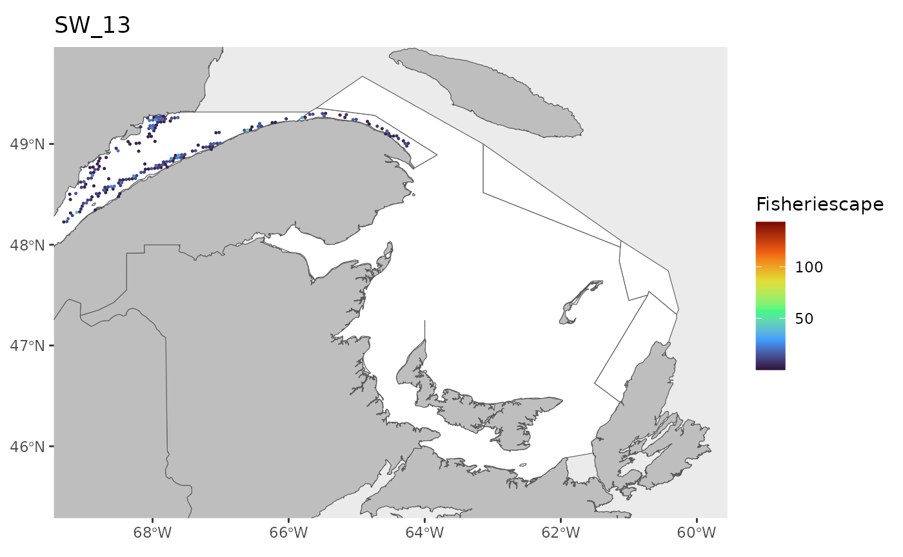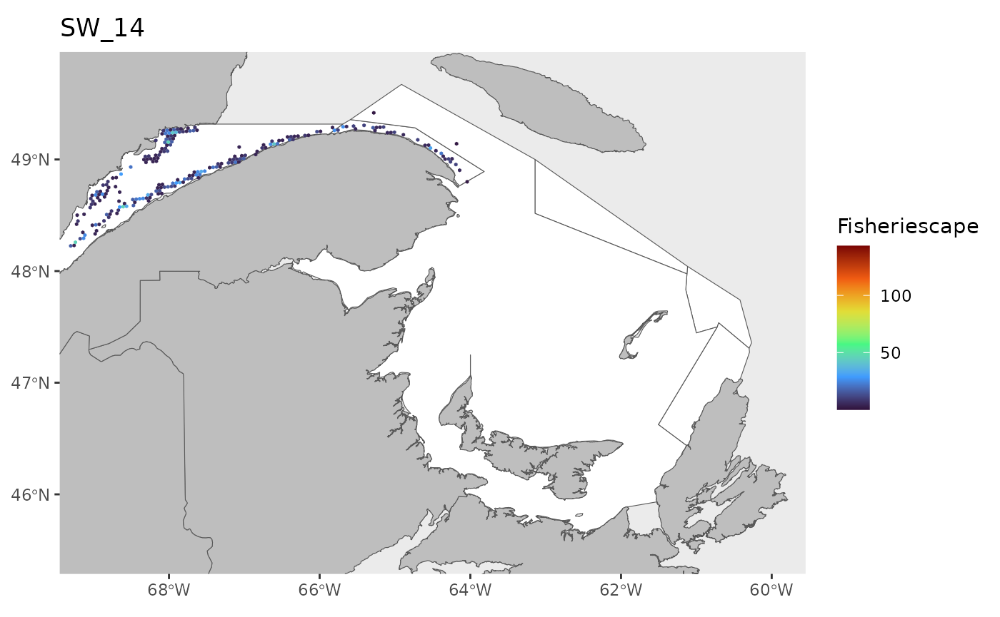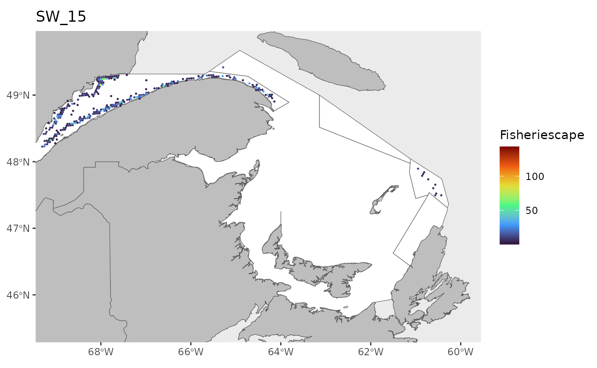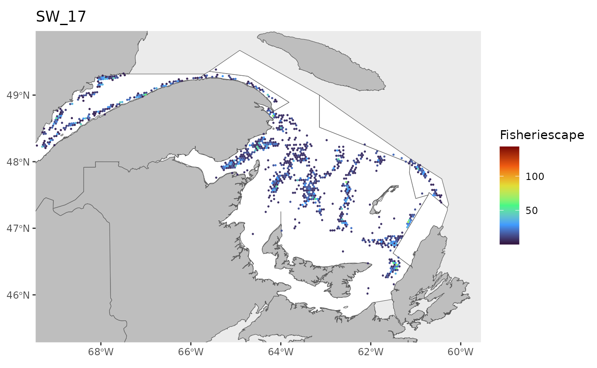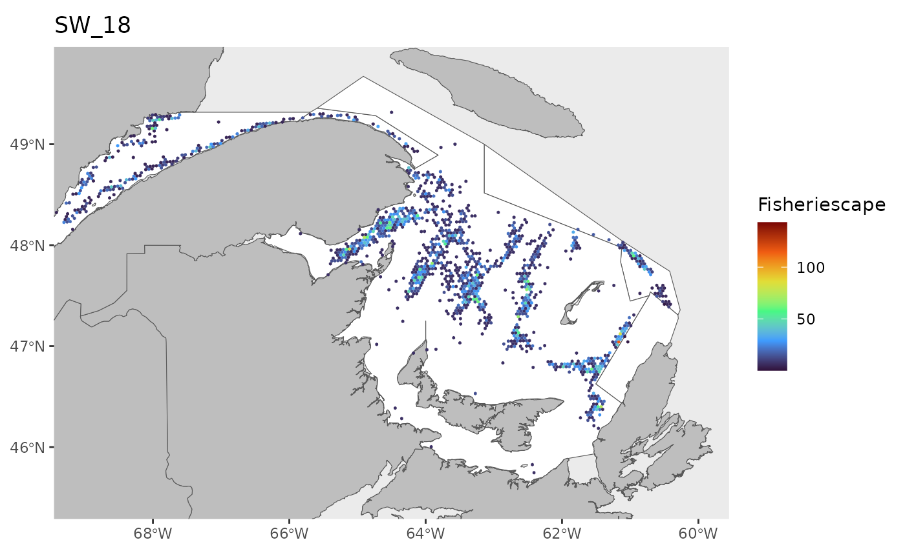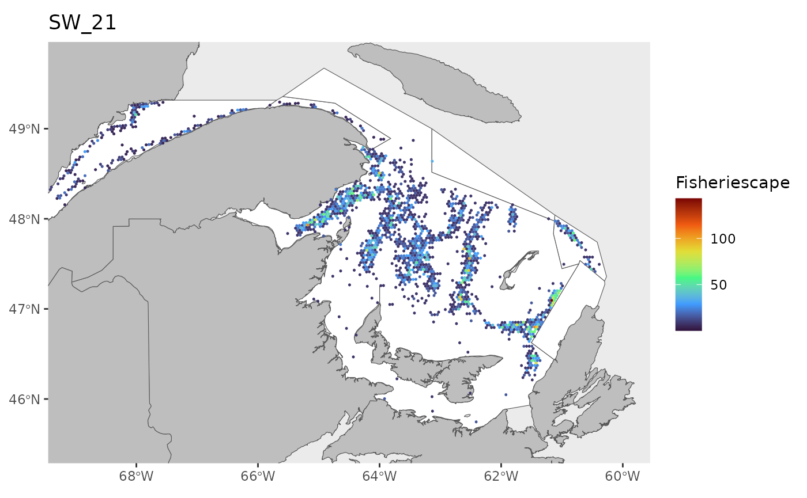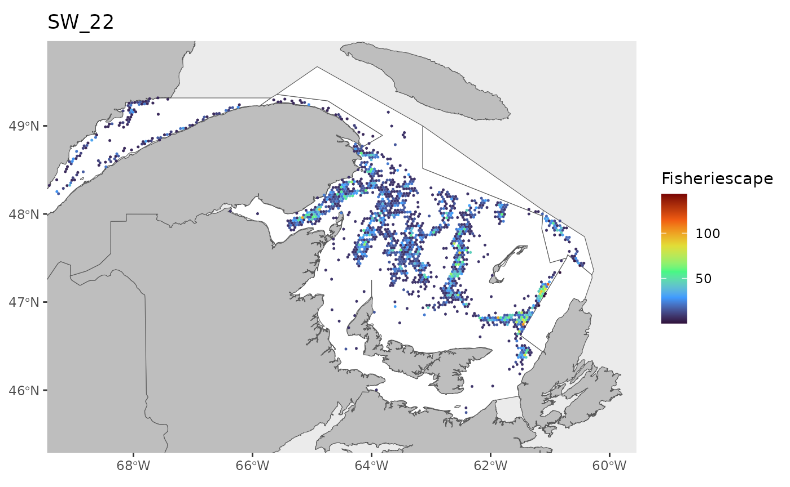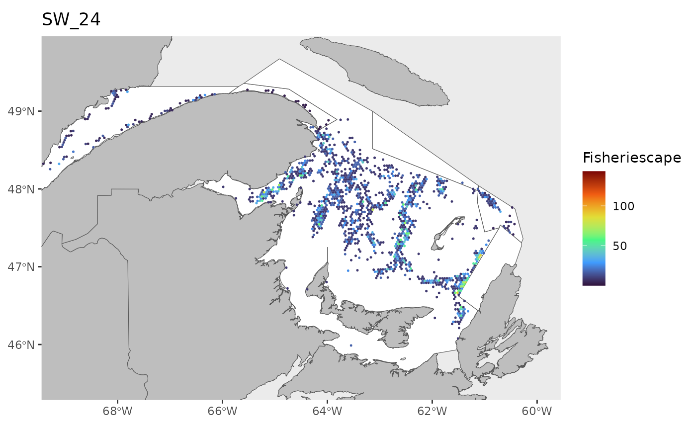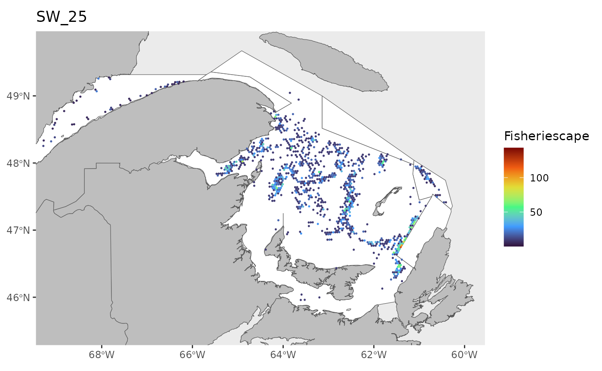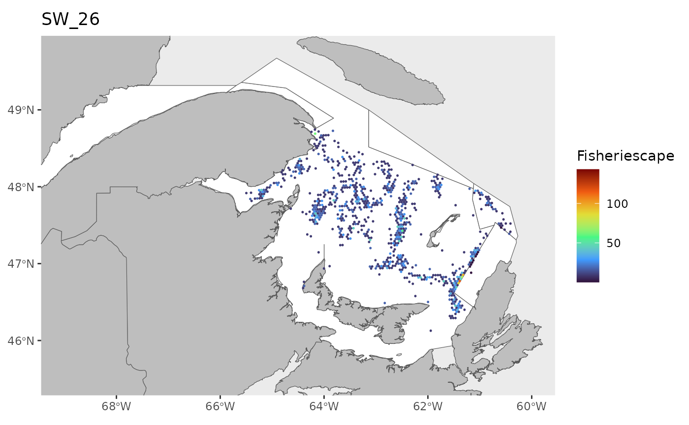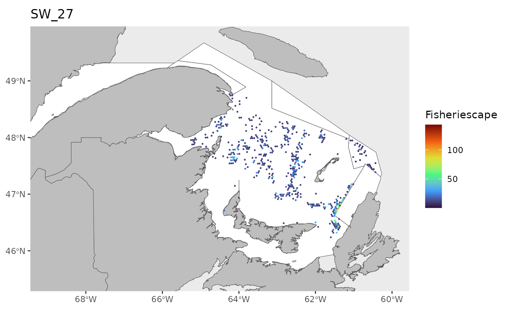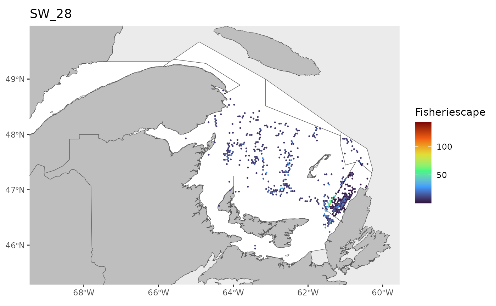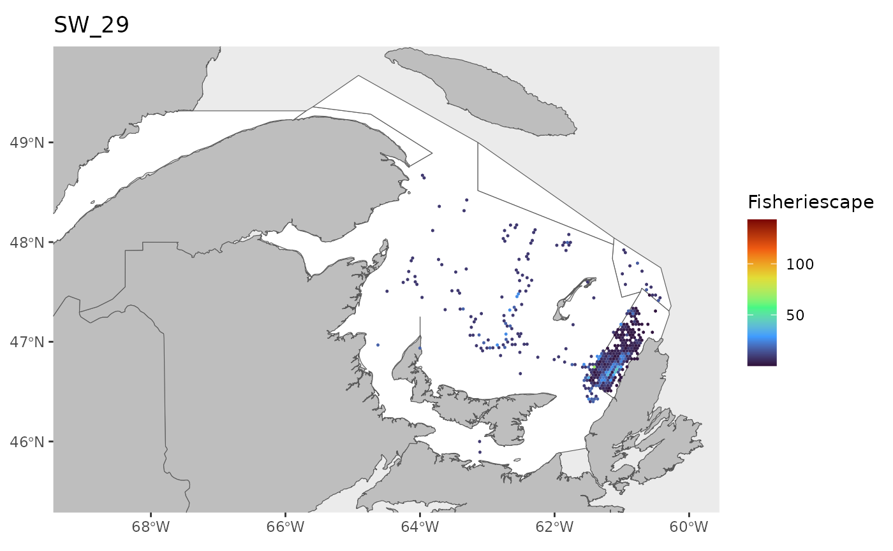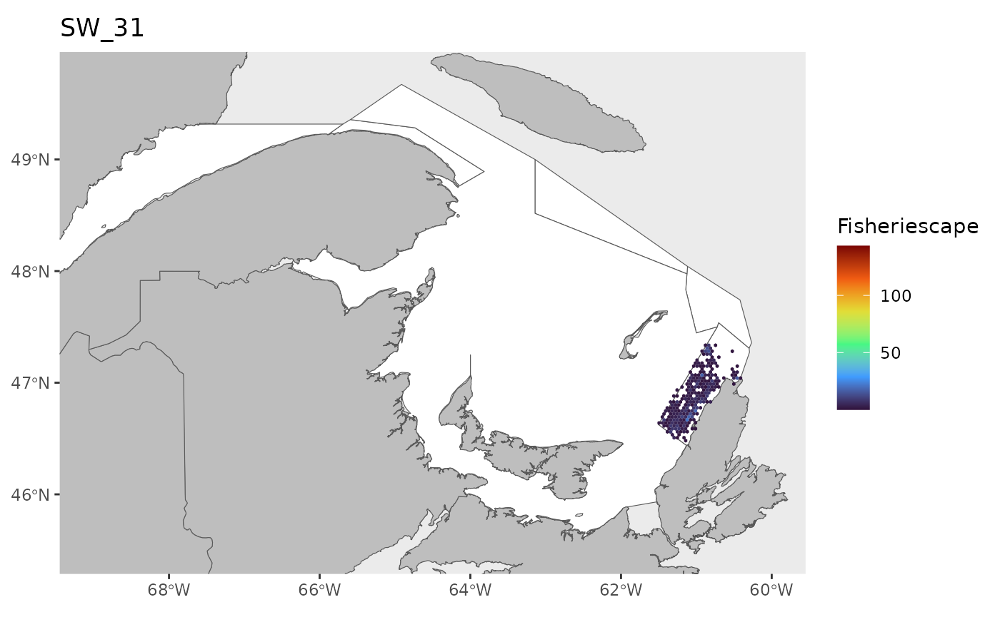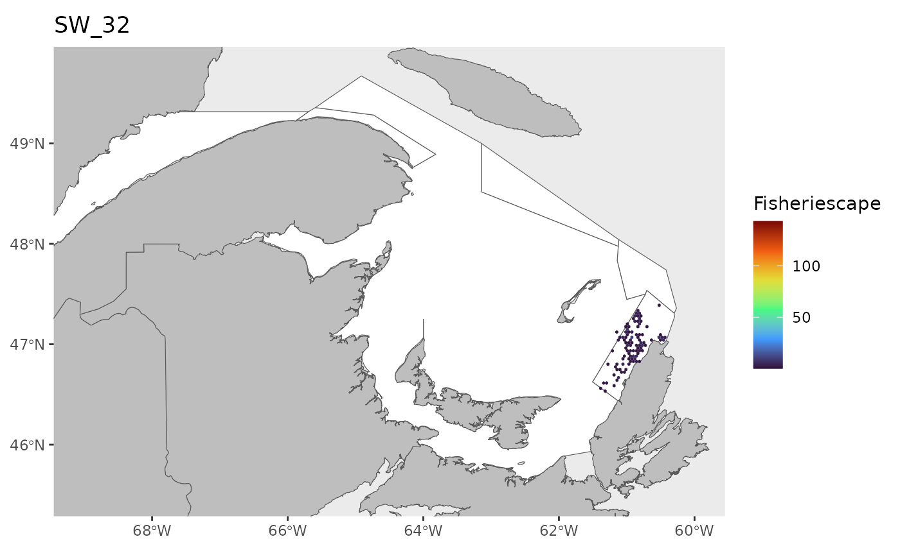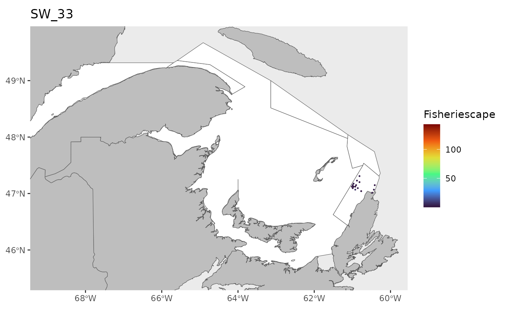